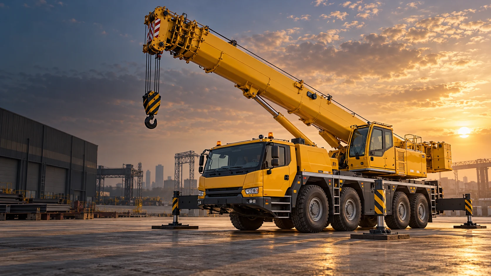

AI 场景示意

WUHAN · MOBILE CRANE RENTAL
武汉吊车出租
租吊车，就找嘉豪。
设备吊装 · 建材吊运 · 工地配合
汽车吊与司机到场，按你的项目沟通安排。
汉阳 / 经开 / 蔡甸及武汉多区车型 · 档期 · 报价逐单确认
01
说清工况位置、重量、半径与高度
02
沟通选车按需协调汽车吊合作车源
03
确认报价时间、进退场与费用提前沟通
CRANE RENTAL / 吊车租赁
你有吊装需求，
我们来沟通选车。
从设备进场到工地配合，先了解现场，
再确认适合的汽车吊、司机与档期。
可咨询 8、25、35、50、80、100、130、200、300、500、800 吨需求。通过固定合作车源协调，所列吨位不代表均有现车；实际车辆及适用性按项目确认。
WORK SCENARIOS / 吊装场景
你的现场，
属于哪一种？
发张照片，沟通更直观。
按实际施工条件确认吊装安排。
AI 场景示意
AI 场景示意
以上为 AI 生成的服务场景展示，非嘉豪施工实拍或客户案例。实际作业方案以现场条件确认为准。
JIAHAO IN MOTION / 动态展示
吊装场景，
一眼看得见。
从工业园区到施工现场。
播放短片，了解常见汽车吊服务场景。
AI 场景动态展示 · 非施工实拍或客户案例 · 约 18 秒看完直接聊需求 ↗
- 01
在哪里，什么时候用？
施工地址、日期、预计作业时长。
- 02
吊什么，大概多重？
吊装物名称、重量、尺寸与吊点。
- 03
吊多高，离车多远？
作业高度、半径及落点位置。
- 04
现场能不能进车？
道路、支腿位置、地面与周边照片。
费用结合车型、时长、距离与现场条件确认。
BEFORE YOU RENT / 租车前了解
租得明白，沟通到位。
LET’S TALK / 现在聊聊
在武汉找吊车？
联系嘉豪吊装。
告诉我们地点、时间和吊装需求，沟通车型与报价。